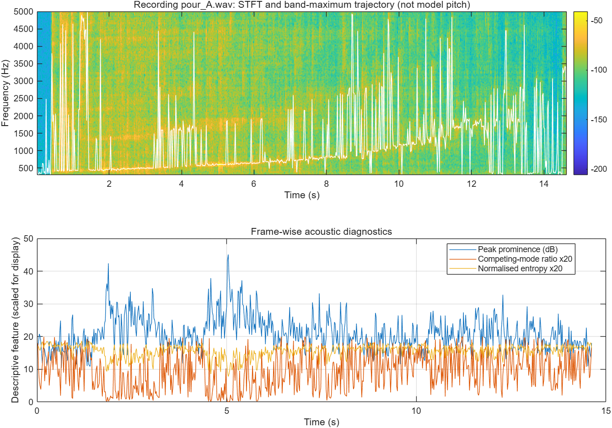
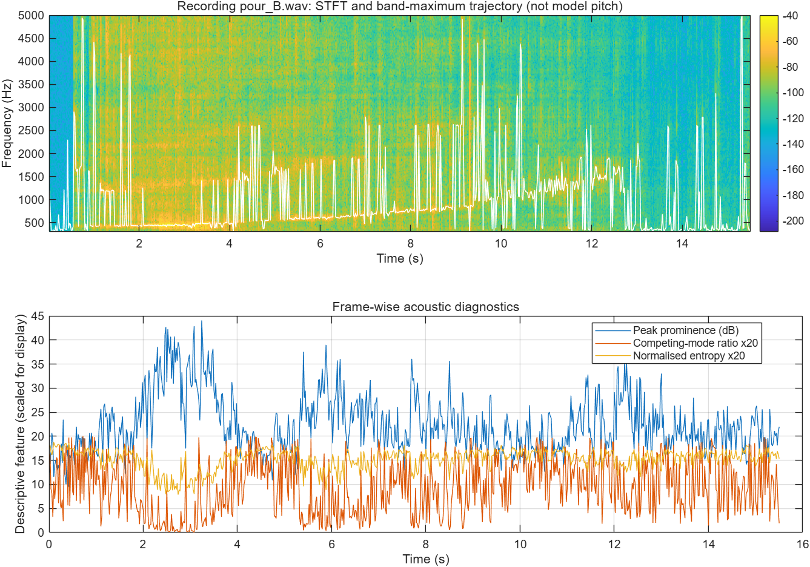

Research question
Can interpretable spectro-temporal features identify when physics-based pouring-sound liquid-level estimation is likely to be reliable or unreliable?
Following feedback, this project focuses on estimator failure conditions, not another generic four-class fill-level predictor.
Completed
- Two public water-pouring WAV recordings and their source metadata
- FFT/STFT with Hann windows and comparisons of time-frequency resolution
- Band maximum, centroid, spread, spectral roll-off and RMS measurements
- Prior controlled filtering, resampling, noise, and reconstruction experiments
- MATLAB code and saved Report 1 outputs
Current diagnostic extension
- Peak prominence above local spectral background
- Competing second-peak strength
- Peak-frequency discontinuity
- Normalised spectral entropy
- Scripts for repeatable analysis and plots
These are candidate indicators, not validated error predictors.
Preliminary observations
Existing Report 1 results, using 40 ms Hann frames, 50% overlap and 8192-point FFT:
| Recording | Early spectral maximum | Late spectral maximum | Early / late centroid |
|---|---|---|---|
| A | 503.9 Hz | 1593.8 Hz | 1946.2 / 1832.1 Hz |
| B | 468.8 Hz | 996.1 Hz | 1727.4 / 1467.0 Hz |
Interpretation: these are spectral maxima, not validated fundamental-pitch estimates; time thirds are not measured fill levels. Both clips come from the same container. Physical fill-level errors have not been computed.
Preliminary acoustic diagnostics — MATLAB results
The figures below are outputs from run_reliability_features.m, applied to the two previously selected public pouring recordings (40 ms Hann STFT, 50% overlap, 8192-point FFT; peak-search band 300–5000 Hz). The white trace follows the largest in-band spectral peak, not a validated fundamental frequency or output from the pretrained model.


Download frame-level diagnostic features (CSV) · View all saved results
Scope of these figures: peak prominence, competing peak ratio, peak-frequency discontinuity and spectral entropy are exploratory acoustic descriptors. With only two recordings from the same container and no aligned physical error labels, they cannot yet validate estimation reliability or generalisation to unseen containers.
Official model reproduction — in progress
Using the authors’ Sound of Water example notebook, the example video and metadata were loaded, a Log-Mel spectrogram was displayed, and a physics-based reference pitch trajectory was overlaid on the spectrogram. A pretrained checkpoint was obtained and Python/GPU environments were prepared; the full pretrained inference and predicted-pitch output have not yet been successfully reproduced.
The displayed reference-pitch trajectory was calculated from the example's metadata/physical assumptions; it is not a neural-network prediction and should not be interpreted as an independently measured pitch ground truth. Official code and dataset belong to the original authors. This repository currently contains the MATLAB analysis outputs above, not a validated model-inference result.
Next steps
- Reproduce official pretrained pitch/physics inference on example recordings.
- Expand to official seen/unseen container groups with ground-truth physical targets.
- Test whether resonance features relate to observed estimation error.
- Construct and evaluate a simple reliability score using selective prediction.
- Analyse spectrogram failure cases and produce the final reproducible report.
Code, documentation and references
MATLAB analysis code ↗ · Saved outputs ↗ · Data provenance · Original proposal
Primary prior art: Bagad et al. (2026), The Sound of Water. Official code · Dataset · Models.
Prepared by Yueyao Lyu | Academic work in progress